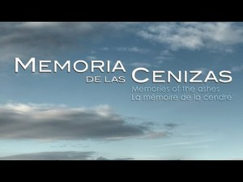
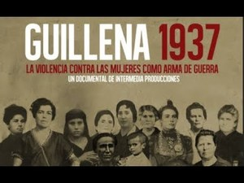

Documentales de Memoria Histórica - La web de emijrp
Esta es una recopilación de documentales de Memoria Histórica que he ido encontrando a lo largo de los años.
| Memoria de las cenizas |
|---|
| Dirección: Eduardo Montero · Año: 2012 · Duración: 60 minutos |

|
| Sinopsis:
Más de 1.500 andaluces fueron apresados en los campos de concentración nazis durante los años de la II Guerra Mundial. Un millar dejaron sus vidas en aquellos recintos del horror, ideados para degradar la condición humana hasta las cotas más inimaginables. Los supervivientes hicieron un juramento: dedicar sus vidas a recordar y honrar la memoria de los millones de seres humanos asesinados en estos campos. (FILMAFFINITY)
Ver online: Memoria de las cenizas |
| Guillena 1937 |
|---|
| Dirección: Mariano Agudo · Año: 2013 · Duración: 60 minutos |

|
| Sinopsis:
En septiembre de 1937, diecisiete mujeres de Guillena fueron sacadas de sus casas por orden de las autoridades sublevadas y llevadas a la celda del Ayuntamiento. Un mes más tarde, tras ser vejadas y humilladas públicamente por las calles de su pueblo, serán fusiladas e inhumadas en el cementerio de Gerena, una localidad vecina. Tendrán que pasar 75 años para que sus familiares logren comenzar la exhumación de la fosa común donde se agolpan sus restos. Este documental reflexiona sobre la utilización de la violencia sobre la mujer como arma de Guerra y la necesidad de los familiares de los desaparecidos de encontrar y dar sepultura a sus seres queridos. (FILMAFFINITY)
Ver online: Guillena 1937 |
Otros
- Espías en la arena
- Vida de Luis Vega. Memoria de Paterna
- María. Memoria de una niña de la guerra
- Lo posible y lo necesario
- La desbandá
- Las sinsombrero. Las mujeres de la Generación del 27
- Desde el silencio, exilio republicano en el norte de África
- Dejadme llorar
- Herencias del 36
- La fosa borrada del sur
- Dejadme llorar. El genocidio olvidado
- Descubriendo Gurs
- Los yunteros de Extremadura
- La hija del tiempo
- Santuarios del antifranquismo
- Campos sin memoria
- Sucedió en Grazalema
- El dolor que no prescribe
- Madres invisibles
- Las víctimas sin llanto
- Presos de la memoria
- A la sombra de la tapia
- El cinturón rojo
- Héroes invisibles. Afroamericanos en la Guerra de España
- Melchor Rodriguez, el angel rojo
- Las niñas que vestían de blanco
- COPEL: una historia de rebeldia y dignidad
- Presos del silencio
- TRABAJADORIAK, ESCLAVOS DEL FRANQUISMO EN OARSOALDEA
- El retratista
- Lesa Humanitat
- La sima del olvido
- Eduardo de Guzman: el literato anarquista
- Los internados del miedo
- Las presas de franco
- Así pasen 100 años
- A Guerra também foi nossa
- Cautivos en la arena
- Ojos que no ven, víctimas del fascismo desde la transición
- El convoy de los 927